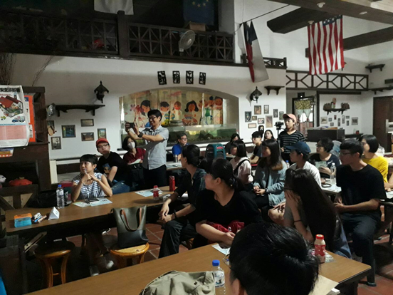
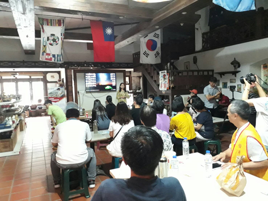

看見台灣文創陶 新聞稿 |
| 由「新北市鶯歌陶瓷產業研發聯盟」及「庫泥燒願景會」協辦之「陶瓷文創研發與設計」的免費研習課程，於7月17日圓滿結束。連續三週的週一於「陶驛陶藝」教室舉辦，由醒吾科技大學時尚造形設計系副教授傅茹璋博士擔任講師，吸引眾多學員參與研習；包括鶯歌在地業者與居民，以及來自桃園、台北、台中對陶瓷文創題材有興趣的學員，並有新竹中華大學「杜嘉琪」老師及土城區德霖技術學院「劉芸華」老師帶領學生參加本次課程研習。本次系列課程內容包括「設計與使用者的對話」、「陶瓷創意研發與設計的思維」及「陶瓷創意整合設計的實務」，傅教授以生動活潑的方式帶領課程，學員反應熱烈。課程最終以設計「看見台灣文創陶」系列商品為研發方向，讓學員嘗試以「台灣造型」為主體，結合「功能性」為發想，輔以「海洋文化」、「原住民文化」、「客家文化」、「台灣原生動物系列」、「台灣原生種植物系列」為圖騰，或以「地方特色地標」、「節慶習俗文化」等為創作內涵，研發文創加值系列商品。透過本次研習活動舉辦，啟動「看見台灣文創陶」系列商品的粉墨登場，期待與各界同好持續推動。 此外，主辦單位「新北市鶯歌陶瓷產業研發聯盟」藉此研習機會，召開「午餐便當會」，討論鶯歌陶瓷產業未來發展的策略與營運機制，並研擬往後每月的第一個星期三召開月例會議，誠摯歡迎各界熱情參與。 洽詢電話：02-2563-9323 願景會 張先生 |
  |